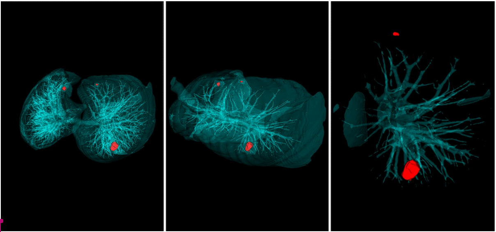
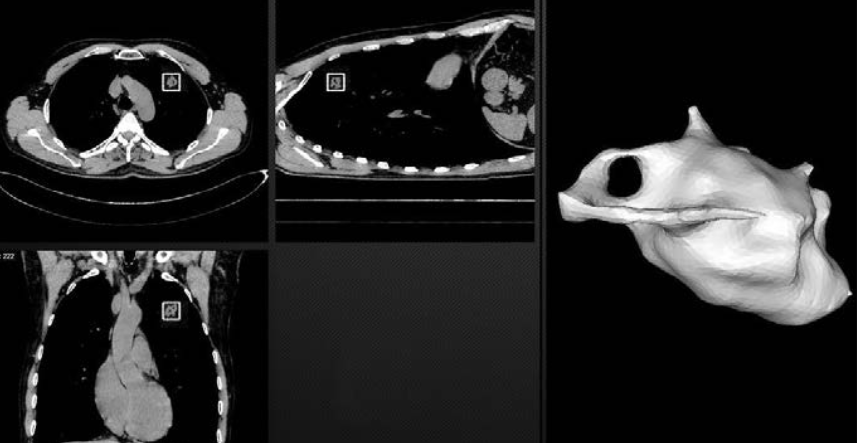

Интеллектуальная система диагностики опухолей в легких
Ученые Политехнического университета совместно с врачами Санкт-Петербургского клинического научно-практического центра специализированных видов медицинской помощи (онкологического) разработали интеллектуальную систему диагностики опухолей в легких. Программное обеспечение, которое можно установить на любом компьютере, за 20 секунд анализирует компьютерную томографию легких пациентов и выдает заключение в виде наглядно выделенной патологии. Разработчики назвали систему Doctor AIzimov (AI – Artificial Intelligence, то есть искусственный интеллект) в честь писателя-фантаста Айзека Азимова, который провозгласил три знаменитых закона робототехники.
В конце 2018 года были проведены закрытые испытания интеллектуальной системы. Она проанализировала анонимизированные снимки компьютерной томографии 60 новых пациентов Онкоцентра. По оценкам врачей, испытания прошли успешно, так как система обнаружила очаговые образования в легких даже малых размеров (2 мм). «Изначально мы настраивали алгоритм на поиск очагов от 6 миллиметров, так как этой тактики придерживаются и сами врачи. Но система настолько обучена, что сама находит новообразования еще меньшего размера», – пояснил Лев УТКИН, руководитель проекта, заведующий Научно-исследовательской лабораторией нейросетевых технологий и искусственного интеллекта.
Лаборатория создана на базе Политехнического университета, однако помимо сотрудников вуза (Льва Уткина, Михаила Рябинина и Алексея Лукашина), в ней работают специалисты Онкоцентра – заведующая отделением лучевой диагностики Анна Мелдо и врач-рентгенолог Иван Прохоров. Проект мультидисциплинарной группы специалистов получил поддержку Российского научного фонда, а технология определения опухоли с помощью метода хорд получила патент за рекордные 3 месяца.
Метод хорд заключается в том, что на снимке компьютерной томографии на поверхность опухоли случайным образом помещаются точки, которые потом соединяются отрезками – хордами. Гистограмма длин этих отрезков отражает форму и структуру опухоли. Так ученые исследуют новообразование изнутри, но не менее важно, что окружает его снаружи. Для этого опухоль условно помещается в куб, а от его граней к поверхности новообразования проводятся перпендикуляры. Таким образом, вместо графически сложного и объемного снимка компьютерной томографии (его размер может достигать 1 Гб), опухоль представляется в виде компактных и простых гистограмм, которые и анализирует Doctor AIzimov.
Прежде чем система начала работать, необходимо было научить ее определять новообразования и отличать злокачественные опухоли от доброкачественных. «На компьютерной томографии можно увидеть множество объектов, и главная задача – научить систему распознавать, что представляет собой каждый из них. Приближая процесс обучения системы к логике врача и используя клинико-рентгенологическую классификацию, мы пытаемся научить систему не только выявлять новообразования, но и отличать другие заболевания, похожие на рак», – комментирует заведующая отделением лучевой диагностики Анна МЕЛДО. Система прошла обучение на порядка 1000 снимках компьютерной томографии из баз данных LUNA 16 и LIDC. Сотрудники лаборатории создают и собственную базу данных LIRA – Lung Intelligence Resource Annotated, где на данный момент можно найти снимки около 250 пациентов. К середине 2019 года она увеличится в четыре раза.
С каждым новым снимком система сама себя совершенствует. В этом ей помогает суперкомпьютерный центр «Политехнический», который ускоряет настройку алгоритма. Планируется, что снимки пациента по внутренней сети будут отправляться в суперкомпьютерный центр Политеха, где их обработка займет уже не 20, а две секунды, после чего врач получит размеченное изображение и будет работать уже с ним, а не с объемной компьютерной томографией – это сокращает время анализа.
После закрытых тестирований планируется открытое испытание системы, затем она будет внедряться в Онкоцентре. В дальнейшем ученые хотят развивать проект и привлекать к нему другие медицинские учреждения. Со временем алгоритм можно научить анализировать УЗИ и рентгеновские снимки других внутренних органов. Все данные будут обрабатываться суперкомпьютером, а результаты, выданные системой, отправляться врачам.